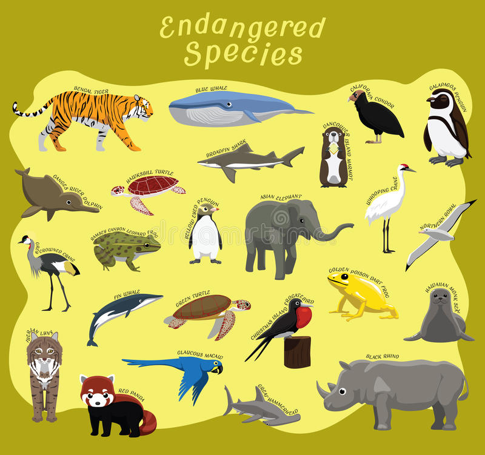
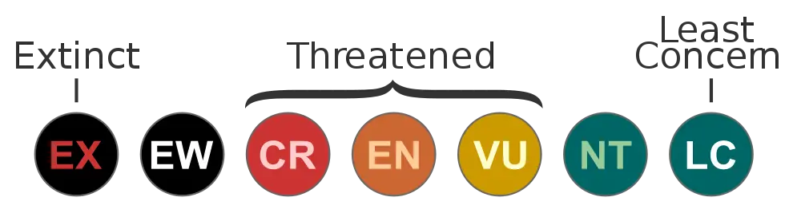

Conservation Status of Species
The conservation status shows a group of species that exists and how close they are to becoming extinct. All the changes in their environment and the world by making it harder for the species to stay alive. The changes that made it difficult to survive in the past that caused extinction to include the Ice Age, climate change, volcanoes, meteor strikes, and human hunting. Today, extinction reasons include habitat loss, poaching, and invasive species.
Status Lists
There are different statuses of life under which a species falls under. That status is called The International Union for Conservation of Nature Red List of Threatened Species (IUCN Red List). The IUCN Red List goes from extinct, threatened, and Low Risk with subtopics in between. It’s important to know where the species falls, so individuals can see how much protection they need.
Prevent
After an individual finds out the convention status of the species, they could try to help prevent it from happening. They could research information about the species like why it is on the IUCN Red List and what are others doing about it. Researching this could help individuals have more knowledge of the situation and stop whatever is causing them to decrease.